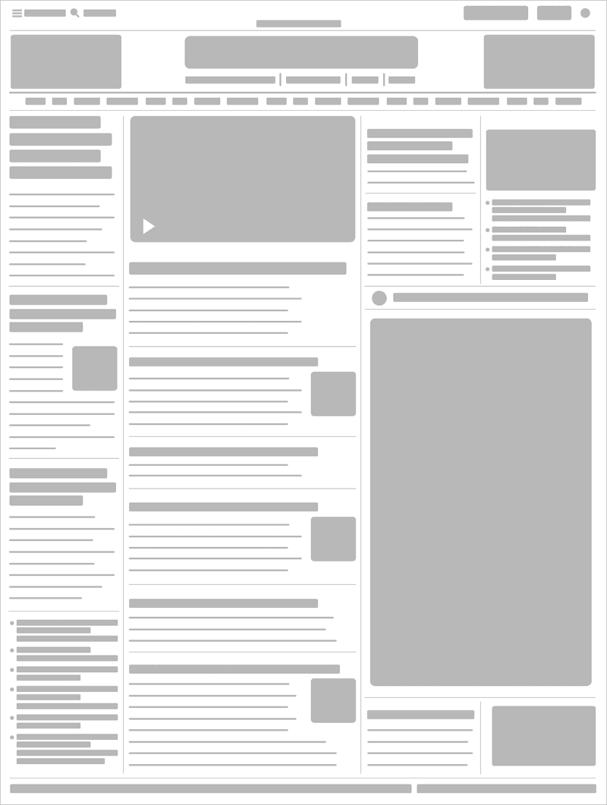

Which two websites are you inspired by most?
How do they exibit effective use of space, size or balance?
Both sites are information dense. In fact the main reason I admire these sites is that the designers found away to include a ton of information with out overwhelming me. Each site draws me in and I am able to quickly scan the page and pick out several articles that would be of interest. The contrast created from the headline fonts is helpful in creating hierarchy. And in comparison the body text plays an easy-to-browse supporting role.
Each site has a strong header in terms of contrast to the rest of the page. On the NY Times it is easy to see which articles are the latest headlines because of the size of the headline. On Aiga I love the balance between main articles and little snippets and asides.
What makes them similar and different?
The difference between each site is that they use different design elements to break up the content, AIGA uses boxes with tasty little shadows beneath them while NY Times uses a thin rule to separate content. AIGA largely uses San Serif fonts and the NY Times is mainly using Serif fonts.
The sites are similar in that they pack in a lot of information but both sites make it worth your while to stick around for a while and enjoy the content.
Thumbnail Sketches
- AIGA
With this site hierarchy is established with AIGA's square logo firmly placed in the upper left-hand corner. Focal points are created by using extra bold san serif fonts for the headlines. This design choice creates contrast. Balance is created with the placement of a wide column and then a narrow column and so on. The placement of the wide column in respect to the narrow column also allows for a nice flow.

- New York Times
On this site hierarchy draws the viewers eye to the upper left-hand column where one sees the latest headline of the day. The serif font is bold and italicized. The headline is also set in a bigger size then any other headline on the page. Focal point takes the viewer to the main photo at the top of the page and then their eye is guide the left-hand where they can begin to scan the different columns. Balance is established by the use of different headlines. The main story gets the biggest headline. Secondary stories have a smaller headline and so on. This site has good flow or feng shui.
